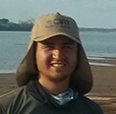
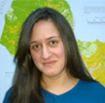
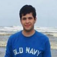
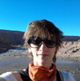

Acerca de
Carto Chaco es una alianza entre organizaciones preocupadas en comunicar y priorizar la relevancia de esta bioregión. De esta manera, esta iniciativa combina el uso de diversas geotecnologias como la visualización amigable de mapas temáticos, reportes mensuales del monitoreo de la vegetación natural y técnicas de geoperiodismo.
Carto Chaco es una plataforma de información que pretende brindar y difundir conocimiento acerca del Gran Chaco Americano, una región, con cerca de 106 millones de hectáreas, que se extiende por 4 países, Paraguay, Bolivia, Argentina y Brasil.
Para contactar a el equipo de Carto Chaco: carto.chaco@gmail.com
El Chaco, considerado como una de las bioregiones más importantes del planeta, cuenta con una alta diversidad de ecosistemas ricos y endémicos en vida salvaje y vegetal. Adicionalmente, contribuye significativamente para el funcionamiento y regulación de una de las más grandes cuencas del mundo, la cuenca del Río de la Plata.
No obstante, la presión por actividades humanas (mayormente agricultura comercial) ha generado una de las tasas más altas de pérdida de vegetación natural, en su mayoría bosques secos, en todo el mundo. De acuerdo a estimaciones del sistema de monitoreo Terra-i del Centro Internacional de Agricultura Tropical (CIAT), desde 2004 a 2013, el avance total de las pérdidas de vegetación natural de esta región suman cerca de 4.2 millones de hectáreas.
Carto Chaco es una alianza entre organizaciones preocupadas en comunicar y priorizar la relevancia de esta bioregión. De esta manera, esta iniciativa combina el uso de diversas geotecnologias como la visualización amigable de mapas temáticos, reportes mensuales del monitoreo de la vegetación natural y técnicas de geoperiodismo. En su conjunto, las anteriores herramientas permiten contextualizar y mantener actualizado a diferentes actores, incluyendo cientificos interesados en los últimos hallazgos en su área de interés, periodistas que buscan reportar sus historias relacionadas con el medio ambiente, y público en general interesado en lo que suceda en esta región.
Inicialmente, la idea de la plataforma surgió de la unión de un grupo de investigadores de la Asociación Guyra, basada en Paraguay, y del proyecto Terra-i, iniciativa multi-institucional liderada por CIAT, basada en Colombia. Ambas organizaciones dedicadas al monitoreo de cambios de vegetación natural, mayormente bosques, solicitaron por parte del grupo de periodistas y desarrolladores de InfoAmazonia, plataforma basada en Brasil y cuyo software JEO es pionero en noticias georeferenciadas. Igualmente, a esta iniciativa se unió un grupo de talentosos programadores de Simgia, empresa dedicada a la construcción de soluciones IT especializadas basada en Asunción, capital paraguaya.
La iniciativa solo se ha hecho posible con el apoyo financiero de la Earth Journalism Network, de la ONG Internews, y de CIAT (mediante el programa del grupo CGIAR de Bosques, Árboles y Agroforestería – FTA). A la fecha, Carto Chaco cuenta con un equipo multidisciplinario de investigadores, cartógrafos, desarrolladores y periodistas. Nuestra ambición es integrar nuevas personas en esta iniciativa y crear una comunidad de expertos, medios de comunicación y ciudadanos involucrados en la conservación del Gran Chaco Americano
Equipo
-
Dr. Louis Reymondin
El Dr. Louis Reymondin es un experto en programación de sistemas y desarrollo de software. Tiene un pregrado en Programación de la Universidad HEIG-VD en Suiza y recientemente obtuvo su doctorado en Geografía en el King’s College London, por el desarrollo e implementación de Terra-i, un sistema de alerta temprana para monitorear cambios en el hábitat en toda América Latina. Louis cuenta con más de 8 años de experiencia en la coordinación del proyecto Terra-i así como en el desarrollo de otras aplicaciones basadas en el empleo de la inteligencia artificial y minería de datos para investigaciones sobre las dinámicas entre actividades antropogénicas y el medio ambiente. Su equipo de trabajo está conformado por jóvenes profesionales colombianos que desarrollan componentes específicos del sistema de monitoreo. Su papel en CartoChaco está en supervisar e implementar las mejoras del sistema Terra-i y su integración con otros sistemas de monitoreo como el realizado por GUYRA-Paraguay.
-

Alejandro Coca-Castro
Alejandro Coca-Castro, analista geoespacial del proyecto Terra-i, es Ingeniero Agrónomo de la Universidad Nacional de Colombia. Cuenta con cerca de 5 años de conocimiento en el uso, interpretación y análisis de datos geoespaciales para diversos estudios en agricultura y medio ambiente. Ha sido becario y miembro de la Sociedad para la Conservación GIS (SCGIS), y también participa como miembro asociado de la Unión Internacional de Organizaciones de Investigación Forestal (IUFRO). Su papel en CartoChaco está en actualizar y buscar información geoespacial disponible y accesible de la región del Gran Chaco.
-
Jhon Jairo Tello-Dagua
Jhon Jairo Tello-Dagua, website manager del proyecto Terra-i, es Ingeniero de Sistemas de la Universidad Cooperativa de Colombia. Desde su ingreso al CIAT, Jhon se ha involucrado principalmente en el desarrollo de la plataforma web y visualizador de datos del proyecto Terra-i. Jhon cuenta con conocimiento de diferentes tecnologías de programación para la visualización de datos geoespaciales e información en general como JAVA, Google APIs, CartoDB, MapBox, entre otros. Su papel en CartoChaco está en actualizar y brindar soporte en la visualización de los datos geoespaciales desplegados en la plataforma.
-

Paula Andrea Paz-García
Paula Andrea Paz-García, asistente técnica del proyecto Terra-i, es estudiante de último año de Ingenieria Topografica de la Universidad del Valle. Cuenta con conocimiento y manejo general de herramientas SIG y sensores remotos. Actualmente, apoya en las funciones de descarga, procesamiento y post-procesamiento de los datos del proyecto. Su papel en CartoChaco está en extraer la información de cambios del sistema Terra-i para la región del Gran Chaco. Asimismo, Paula brinda soporte en la búsqueda de nueva información geoespacial disponible para esta región.
-
José Alberto González von Schmeling
José Alberto González von Schmeling, programador de la Universidad Nacional de Asunción - Facultad Politécnica. Entre sus proyectos actuales tiene un blog Proyectos Beta (desde el 2008) que habla sobre temas relacionados de tecnología, participando activamente en el mundo de Software Libre y Código Abierto, participó en DAL 2013 y varios eventos Nacionales como Internacionales (CLEI, Latinoware, etc), participó y realizó un programa de radio sobre tecnología (tecno PYensis), organizó FLISOL - Asunción 2011 y realizó una charla sobre OSM en FLISOL - Asunción 2014. Actualmente está trabajando en Simgia como desarrollador de aplicaciones Web, GIS, etc. En su tiempo libre se dedica a mejorar sus conocimientos sobre GIS y a ayudar a las comunidades al crecimiento del conocimiento sobre la informática (desarrollo, sistemas operativos (GNU/Linux preferentemente), noticias tecnológicas, etc.
-
Jazmín Caballero
Jazmín Caballero, Ingeniera Ambiental, actualmente se desempeña como coordinadora interina de la unidad de geoprocesamiento de la Asociación Guyra Paraguay. A comienzos del año 2010 realizó una pasantía profesional en la Entidad Binacional Yacyreta. Realizó trabajos de voluntariado en la RED Paraguaya de Conservación en Tierras Privadas, aportó a las justificativas técnicas de las Reservas Privadas. A finales del 2010 formó parte del equipo técnico del Proyecto Plan de Ordenamiento Municipal del Distrito de Bahía Negra, donde realizó la tesis de grado llamada "Dinámica espacio- temporal de la cobertura vegetal natural en el Distrito de Bahía Negra mediante la aplicación del modelo Land Change Modeler" que consistió en una modelación de la deforestación para los años 2020 hasta el 2100 del Distrito de Bahía Negra. A finales del 2011 empieza a trabajar en el Instituto Forestal Nacional como Analista SIG. Desde agosto del 2012 forma parte del equipo de SIG de Guyra Paraguay donde se desempeña como Asistente SIG, involucrada en varios proyectos como Monitoreo del Gran Chaco Americano, Análisis de Manglares, Monitoreo de sitios RARE, Infraestructura vial y deforestación en el Chaco Paraguayo, entre otros.
-

Fabiana Graziella Arévalos González
Fabiana Graziella Arévalos González, Ingeniera Ambiental de la Universidad Nacional de Asunción, actualmente forma parte del equipo de Asociación Guyra Paraguay. Entre los proyectos de los que forma parte se citan el “Proyecto de Reducción de Emisiones por Deforestación y Degradación de los Bosques (REDD+); el Monitoreo Mensual de los Cambios de Uso de la Tierra, Incendios e Inundaciones en el Gran Chaco Americano; Proyecto “Análisis de la deforestación de manglares en áreas importantes para la conservación de las aves”; Monitoreo de Cambio de Uso de la Tierra en 13 Sitios de Áreas de Campañas entre Rare y la Asociación Guyra Paraguay. En los años 2010 y 2011 fue entrenada en sistemas de información geográfica en el proyecto "Plan Municipal de Ordenamiento Territorial del Distrito de Bahía Negra, departamento de Alto Paraguay" por los técnicos de la Fundación para la Conservación del Bosque Chiquitano con sede en Bolivia.
-
Fernando Palacios
Fernando Palacios, Ingeniero Forestal, con 6 años de experiencia en Geomática, actualmente desarrolla sus actividades en el Laboratorio de Geoprocesamiento de Guyra Paraguay, y como consultor independiente. De entre algunas de las tareas realizadas, se pueden mencionar emprendimientos tales como Monitoreo del Cambio de uso de la Tierra en las IBAs de la Amazonía Sudamericana, en las IBAs de Manglares de Centroamérica y en el Gran Chaco Americano, Proyectos REDD+ en sus componentes geográficos, Adaptación al Cambio Climático para el Gran Chaco Americano, monitoreos de Incendios e inundaciones desde los sensores remotos, planes de manejo para áreas protegidas, modelación de escenarios futuros de deforestación, cartografías de alta precisión para Cooperativas de la producción, información geoespacial para estudios de fauna, flora, ecosistemas y complejos ecológicos, trabajos a nivel cuencas, acompañamiento a procesos legales relacionados a delitos contra el medio ambiente, impartimiento de cursos prácticos de sensores remotos a organismos del sector privado y del estado como la Contraloría General de la Republica, FECOPROD, entre otros.
-

Edder Ortiz
Edder Ortiz, estudiante de último año de la Carrera de Ingeniería Ambiental. Realizó el Curso Básico de “Cartografía Digital” del Grupo de Especialistas Ambientales. Se desempeñó como voluntario en la Asociación Guyra Paraguay donde contribuyó con el proyecto Análisis Multitemporal: Infraestructura vial y cambio de uso de la tierra en el Chaco Paraguayo.
-
Gustavo Faleiros
Gustavo Faleiros es periodista ambiental y se especializa en periodismo por datos. Actualmente es el coordinador de la Earth Journalism Network, una red global de periodistas ambientales. Fue por dos veces Becário Knight de Periodismo, cuando lanzó InfoAmazonia, mapa digital que se utiliza de datos de satélite disponibles públicamente para vigilar la selva amazónica. Él también ayudó a crear la Red Comunicación por la Amazonía, que entrenó a los periodistas y produjo 200 historias sobre problemas ambientales en la región. La red surgió en el sitio de noticias del medio ambiente brasileño O Eco, donde Faleiros fue editor ejecutivo y introdujo el uso de imágenes de satélite y mapas interactivos en los informes. Comenzó su carrera como reportero de Valor Económico, principal periódico financiero de Brasil. Se cubrió la infraestructura, la energía, el saneamiento y el transporte. Faleiros obtuvo una licenciatura en periodismo en la Pontificia Universidad Católica de Sao Paulo y el grado de maestría en el medio ambiente y política del King´s College de Londres.
-

Luiza Peixe
Luiza Peixe es la diseñadora del logo y del sitio Carto Chaco. Ella posee una licenciatura en Diseño, especialidad en Programación Visual en la Universidad Mackenzie, São Paulo. Trabaja profesionalmente en los ámbitos del arte y el diseño desde 2007. Trabajó como un arte creativo en la Secretaría de Participación y Asociación de la Municipalidad de São Paulo, editor de imágenes y ayudante de fotógrafo Hugo Curti, finisher de arte en la agencia de publicidad SOAP, asistente de artista Lucas Simões y actualmente es miembro fundador del Estudio Cardume, donde trabaja como director de arte. Luiza también desarrolla investigaciones sobre la estética, el arte de la creación y la aplicación de éstos en las interfaces y plataformas estáticas y multimedia. Paralelo a esto, ella se dedica con pasión al activismo bicicleta y estudios de diseño colaborativo.
-
Laura Kurtzberg
Laura Kurtzberg es una estudiante de intercambio de la Universidad de Arizona, en la actualidad el estudio de los Sistemas de Información en la Universidad de São Paulo. Se interesa en la idea de que la información y la tecnología de la comunicación, y el uso de Internet, pueden ayudar al mundo a evitar las crisis y responder a ellas. Laura ha internado en diversos contextos, de ser un miembro de pregrado en el Instituto de Santa Fe, a la creación de base de datos para Internews, a la ejecución de los medios de comunicación social para la Red Iskashitaa Refugiados. El año pasado, ella está orgullosa de haber sido miembro de la junta directiva de Arizona Modelo de las Naciones Unidas, una organización sin fines de lucro dirigida por estudiantes. En su tiempo libre le entrena en el arte marcial de la capoeira.